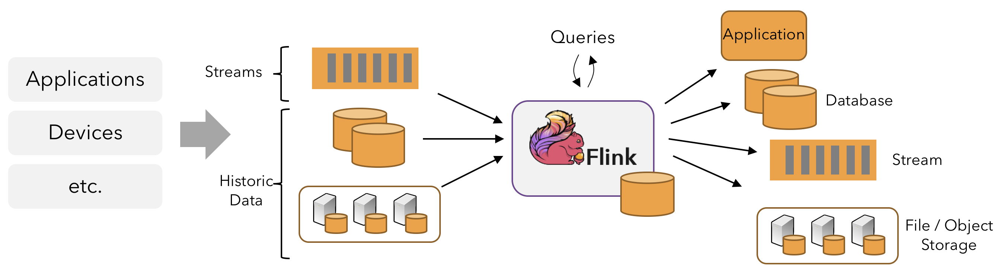

概览
Apache Flink 可以实现可扩展并行度的ETL、数据分析以及事件驱动的流式应用程序。
1、流处理
自然状态下，数据的产生是流式的。分析数据时，可以围绕有界流和无界流两种模式来组织处理数据，选择不同的模式，程序的执行和处理方式也会不同。

批处理：有界数据流处理的范例。在这种模式下，可以选择在计算结果输出之前输入整个数据集，这也就意味着可以对整个数据集的数据进行排序、统计或汇总计算后再输出结果。
流处理：涉及无界数据流。理论上说，数据输入永不结束，因此程序必须持续不断地对到达的数据进行处理。
在 Flink 中，应用程序由用户自定义算子转换而来的流式 dataflows 所组成。这些流式 dataflows 形成了有向图，以一个或多个源（source）开始，并以一个或多个汇（sink）结束。

通常，程序代码中的 transformation 和 dataflow 中的算子（operator）之间是一一对应的。但有时也会出现一个 transformation 包含多个算子的情况，如上图所示。
Flink 应用程序可以消费来自消息队列或分布式日志这类流式数据源（例如 Apache Kafka 或 Kinesis）的实时数据，也可以从各种的数据源中消费有界的历史数据。同样，Flink 应用程序生成的结果流也可以发送到各种数据汇中。

2、并行 Dataflows
Flink 程序本质上是分布式并行程序。在程序执行期间，一个流有一个或多个流分区（Stream Partition），每个算子有一个或多个算子子任务（Operator Subtask）。每个子任务彼此独立，并在不同的线程中运行，或在不同的计算机或容器中运行。
算子子任务数就是其对应算子的并行度。在同一程序中，不同算子也可能具有不同的并行度。

Flink 算子之间可以通过一对一（直传）模式或重新分发模式传输数据：
- 一对一模式（例如上图中的 Source 和 map() 算子之间）可以保留元素的分区和顺序信息。这意味着 map() 算子的 subtask[1] 输入的数据以及其顺序与 Source 算子的 subtask[1] 输出的数据和顺序完全相同，即同一分区的数据只会进入到下游算子的同一分区。
- 重新分发模式（例如上图中的 map() 和 keyBy/window 之间，以及 keyBy/window 和 Sink 之间）则会更改数据所在的流分区。当在程序中选择使用不同的 transformation，每个算子子任务也会根据不同的 transformation 将数据发送到不同的目标子任务。例如以下这几种 transformation 和其对应分发数据的模式：keyBy()（通过散列键重新分区）、broadcast()（广播）或 rebalance()（随机重新分发）。在重新分发 数据的过程中，元素只有在每对输出和输入子任务之间才能保留其之间的顺序信息（例如，keyBy/window 的 subtask[2] 接收到的 map() 的 subtask[1] 中的元素都是有序的）。因此，上图所示的 keyBy/window 和 Sink 算子之间数据的重新分发时，不同键（key）的聚合结果到达 Sink 的顺序是不确定的。
3、时间流处理
对于大多数流数据处理应用程序而言，能够使用处理实时数据的代码重新处理历史数据并产生确定并一致的结果非常有价值。
在处理流式数据时，通常更需要关注事件本身发生的顺序而不是事件被传输以及处理的顺序，因为这能够帮助推理出一组事件（事件集合）是何时发生以及结束的。例如电子商务交易或金融交易中涉及到的事件集合。
为了满足上述这类的实时流处理场景，通常会使用记录在数据流中的事件时间的时间戳，而不是处理数据的机器时钟的时间戳。
4、有状态流处理
Flink 中的算子可以是有状态的。这意味着如何处理一个事件可能取决于该事件之前所有事件数据的累积结果。Flink 中的状态不仅可以用于简单的场景（例如统计仪表板上每分钟显示的数据），也可以用于复杂的场景（例如训练作弊检测模型）。
Flink 应用程序可以在分布式群集上并行运行，其中每个算子的各个并行实例会在单独的线程中独立运行，并且通常情况下是会在不同的机器上运行。有状态算子的并行实例组在存储其对应状态时通常是按照键（key）进行分片存储的。每个并行实例算子负责处理一组特定键的事件数据，并且这组键对应的状态会保存在本地。
如下图的 Flink 作业，其前三个算子的并行度为 2，最后一个 sink 算子的并行度为 1，其中第三个算子是有状态的，并且你可以看到第二个算子和第三个算子之间是全互联的（fully-connected），它们之间通过网络进行数据分发。通常情况下，实现这种类型的 Flink 程序是为了通过某些键对数据流进行分区，以便将需要一起处理的事件进行汇合，然后做统一计算处理。

Flink 应用程序的状态访问都在本地进行，因为这有助于其提高吞吐量和降低延迟。通常情况下 Flink 应用程序都是将状态存储在 JVM 堆上，但如果状态太大，也可以选择将其以结构化数据格式存储在高速磁盘中。

5、通过状态快照实现的容错
通过状态快照（state snapshot）和流重放（stream replay）两种方式的组合，Flink 能够提供可容错的，精确一次（exactly-once）计算的语义。这些状态快照在执行时会获取并存储分布式 pipeline 中整体的状态，它会将数据源中消费数据的偏移量记录下来，并将整个 job graph 中算子获取到该数据（记录的偏移量对应的数据）时的状态记录并存储下来。当发生故障时，Flink 作业会恢复上次存储的状态，重置数据源从状态中记录的上次消费的偏移量开始重新进行消费处理。而且状态快照在执行时会异步获取状态并存储，并不会阻塞正在进行的数据处理逻辑。